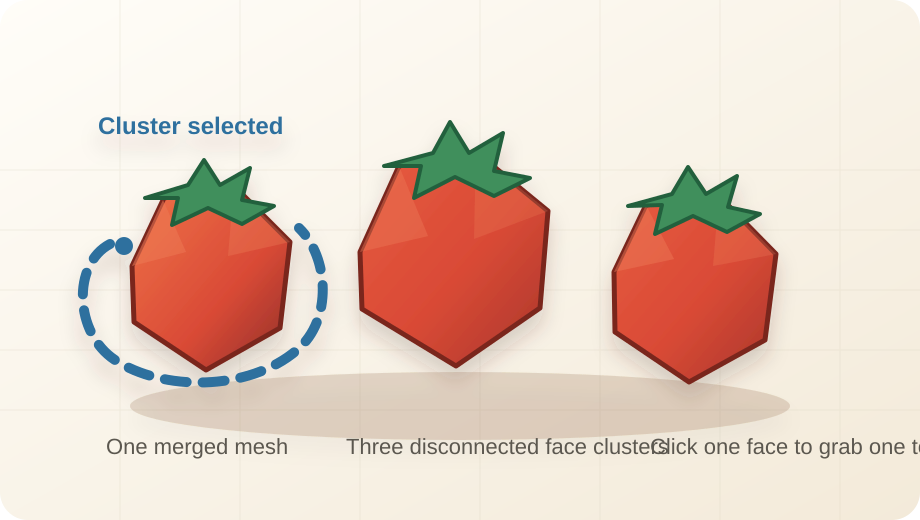

Day 11 — Week 2: Mesh editing control
11Tomato trio — Selection Mode: Cluster
You have used mesh tools for seams and a few selected faces. Today you learn Selection Mode, especially Cluster: one click selects a connected chunk of mesh faces so you can edit that chunk without selecting every face by hand.
One tomato trio render: three low-poly tomatoes merged into one mesh, then edited with Cluster so one tomato can be selected and nudged as a connected piece.
Warm up — 30-second recall
Answer first, then open the cards.
What is a mesh useful for?
What did Seam Tool select?
Why keep the same palette?
The one new idea — Cluster selects connected faces
Selection Mode changes what your viewport click selects. Blockbench lists five mesh selection modes: Object, Cluster, Face, Edge, and Vertex. In Cluster mode, Blockbench starts from the face you click and expands through faces connected by shared vertices. [Selection Mode source] [Cluster click source]
Plain version: if a tomato is one connected island of faces, Cluster grabs the whole tomato. If three tomatoes are merged into one mesh but do not share vertices, Cluster can still grab only the tomato you clicked.
Cluster is not an Outliner group. It does not mean "select everything named tomato." It means select the connected face island inside the current mesh.

Settings tutorial — Selection Mode
The Selection Mode control appears in Edit Mode when a mesh is selected. It decides the selection level before you click.
| Mode | Beginner meaning | Use today? |
|---|---|---|
| Object | Select the whole mesh element. | Use while positioning separate tomatoes. |
| Cluster | Select one connected island of mesh faces. | Main skill today. |
| Face | Select one surface. | Use only for tiny local fixes. |
| Edge | Select mesh edges. | For Seam Tool and later Loop Cut work. |
| Vertex | Select corner points. | Skip today unless fixing a mistake. |
Do it with me
Keep the Selection Mode Cheat Sheet and the Course Palette open.
-
New Generic Model → name it
Save early. This is a tiny produce prop you can later drop onto a prep counter or crate.tomato-trio-cluster-selection -
Add the first tomato as a mesh sphere
In the Outliner, choose Add Element → Add Mesh. Pick Shape: Sphere. Suggested values:Diameter 2,Sides 8or12. Name ittomato_left_meshand move it toX -2.2. -
Add two more mesh spheres
Add or duplicate two more tomato spheres. Name themtomato_mid_meshandtomato_right_mesh. Place them close together but leave them as separate meshes for now. -
Color the tomatoes
Create or reuse a texture. Fill most tomato meshes with Tomato. Make one tomato slightly darker with Tomato Shadow before merging, so the final pile has a little variation. If the texture dialog asks for a size,32 × 32is enough for this small prop. -
Add simple stems
Add three tiny green cubes or cones on top. Keep stems as normal elements; today's Cluster practice is on the tomato mesh faces. -
Select the three tomato mesh objects
In the Outliner, selecttomato_left_mesh,tomato_mid_mesh, andtomato_right_mesh. Do not select the stems. -
Merge the tomato meshes
Use Mesh → Merge Meshes. Blockbench's source describes this action as merging multiple meshes into one mesh. Rename the resulttomato_trio_mesh. [Merge Meshes source] -
Switch Selection Mode to Cluster
Withtomato_trio_meshselected in Edit Mode, find Selection Mode in the toolbar and choose Cluster. -
Click one face on the left tomato
The whole left tomato should highlight, but the middle and right tomatoes should not. That is the core win: one click selected one connected face cluster. -
Nudge the selected cluster
Use Move to lift the selected tomato by aboutY 0.15or slide it byX -0.2. Keep the move tiny. You are arranging a natural pile, not separating the tomato from the prop. -
Try one more tiny transform
With the same cluster selected, use Resize or Rotate very slightly. If the tomato starts looking broken, undo once. The goal is control: you should feel that Cluster grabs the whole connected chunk, not one face. -
Compare Cluster with Face
Switch Selection Mode to Face and click one tomato face. Notice the difference: Face is precise but slow; Cluster is fast when the chunk is already connected. -
Return to Object before normal edits
Switch Selection Mode back to Object. This prevents confusion when you later expect a click to select the whole mesh. -
Render the produce prop
Capture a low 3/4 view. Put the tomatoes on the prep counter from Lesson 9 if you want a stronger kitchen-pack screenshot. -
Post your Day-11 update
Publish the render on itch.io and RedNote with the captions below. Streak: Day 11.
Use Cluster when you think, "I want this whole connected mesh piece, but not the entire mesh object." Switch back to Object when you are done.
itch.io post (English):
RedNote / 小红书 (中文):
Quick self-check
Say the answer first, then open the card.
What does Selection Mode change?
What does Cluster select?
Why merge the tomato meshes first?
What should you switch back to after Cluster work?
Skim the Selection Mode Cheat Sheet. The source-backed point to remember: Cluster expands from the clicked face through connected faces that share vertices.
If Cluster selects too much, too little, or the Selection Mode control is missing, tell me whether the tomatoes are merged into one mesh and what mode is currently selected.